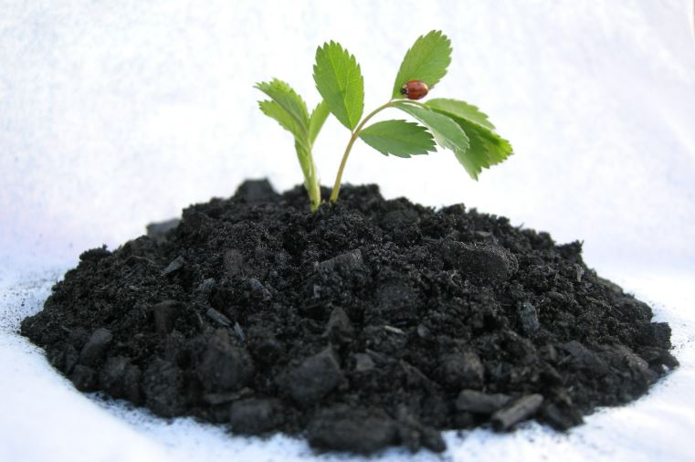

Abstract: With its relatively high stability, biochar has been suggested as a means to mitigate climate change through carbon fixation and improve the physicochemical properties of soils. However, our understanding of the effects of biochar on soil microbial diversity and their metabolic activity remain unclear. In order to elucidate how the application of biochar to plantation soils influences microbial biomass and functional diversity (using Biolog EcoPlatesTM), we conducted an experiment to investigate changes in soil microbial communities at four biochar levels (0, 40, 80 and 120 Mg∙ha-1). We found that biochar application altered the metabolic patterns of microbial communities and accelerated the utilization of amino acids, carboxylic acids, polymers, and other miscellaneous plant chemical compounds by microbes. Moreover, compared to the control, soil pH increased by 0.23, 0.24, 0.28 units, and microbial biomass carbon to nitrogen ratio (MBC/MBN) by 9.20, 20.99, and 17.74, respectively. Meanwhile, soil moisture decreased from 25.7% to 23.8%, 23.7% and 24.4%, and MBN declined by 42.2%, 46.2% and 53.8%. Regression analysis showed that soil pH was the primary factor correlated with reduced MBN. Community physiological profiles revealed that high concentrated biochar (120 Mg ha-1) elevated microbial metabolic activity, while biochar application did not alter microbial functional diversity represented by the Shannon diversity index ( ) and evenness (E). Furthermore, the application of biochar would affect biogeochemical cycling of carbon and nitrogen through the elevated microbial activity and utilization in different categories of carbon sources (polymers, carboxylic acids etc.) with the reduced MBN.
Abstract: Biological diversity contributes to many aspects of human well-being and ecosystem function, however, we have known very little about microbial diversity due to the limitations of appropriate methodology underneath it. The development of biotech have brought revolutionary progress in the study of microbial diversity in which Biolog required to pay a lot of attention due to its ability of reflecting the metabolic situation of living microbial communities and have used widely in the study of soil microbial communities. However, there are some controversies during its operation procedure and incubation process, and handling large data during the analysis might have also caused trouble in the overall process. The approach based on uses of “absolute used”, “INDIRECT” function in Excel could greatly optimize the data analysis, and the increase of principle components in Principle Component Analysis (PCA) were able to extract more information from original data. Besides, the method that through “Taylor” and “logic” transformation for original data before PCA analysis could achieve data analysis optimization. This paper have presented the applications and optimization of Biolog EcoPlates in studies of functional diversity of microbial communities, presented its inherent biases and prospects, provided some reference for the applications and popularization of Biolog EcoPlates for microbial study and finally, the results imply improving the knowledge of biotech in study of soil microbial functional diversity.